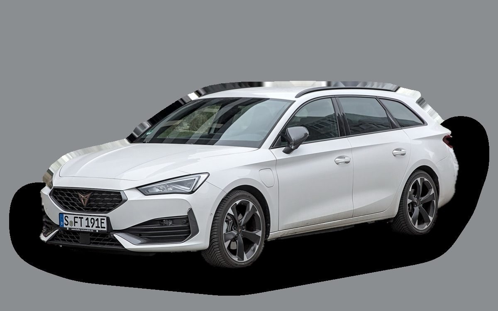
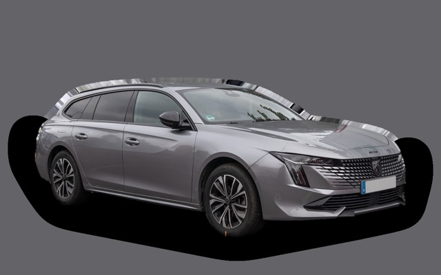
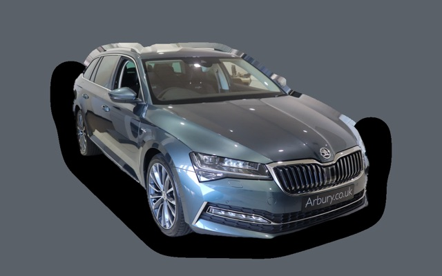

Vad kostar en Cupra Leon Sportstourer per månad?
En Cupra Leon Sportstourer från 2023 kostar cirka 3 936 kr i månaden, allt inräknat.
3 936 krper månad, årsmodell 2023
242 000 krpris, årsmodell 2023
358 500 krnypris från
Bprisvärdhetsbetyg (2023)


Månadskostnad per årsmodell
| Årsmodell | Version i beräkningen | Pris | Per månad | Betyg |
|---|---|---|---|---|
| 2026 | 1.5 eTSI 150 DSG, V | 358 500 kr | 5 331 kr | C |
| 2023 | 1.5 eTSI 150 DSG, V | 242 000 kr | 3 936 kr | B |
| 2020 | 1.5 eTSI 150 DSG, V | 178 000 kr | 3 480 kr | A |
Räknat på 5 års ägande och 1 250 mil per år, med bränslepriser från 2026-10-22. Månadskostnaden innehåller värdeminskning, drivmedel, service och reparationer, försäkring och fordonsskatt.
Så fördelas kostnaden för en 2023:a
- Värdeminskning: 1 543 kr/mån
- Drivmedel: 1 250 kr/mån
- Service och reparationer: 564 kr/mån
- Försäkring: 507 kr/mån
- Fordonsskatt: 73 kr/mån
Begagnatpriser i annonser
| Årsmodell | Medianpris | Annonser | Typiskt miltal |
|---|---|---|---|
| 2026 | 377 400 kr | 6 | 700 mil |
| 2025 | 359 900 kr | 13 | 3 500 mil |
| 2024 | 279 500 kr | 22 | 4 100 mil |
| 2023 | 254 500 kr | 28 | 5 200 mil |
| 2022 | 263 900 kr | 6 | 7 700 mil |
| 2021 | 251 900 kr | 8 | 10 100 mil |
Medianpriset i svenska annonser per årsmodell i oktober 2026 (källa: Blocket, AutoUncle, BilKoll). Annonspriser är utgångspriser, och slutpriset kan bli lägre.
Motorer och versioner
| Motor | Drivmedel | Effekt | 0–100 km/h | Förbrukning (WLTP) | Räckvidd | Årsmodeller | Pristillägg |
|---|---|---|---|---|---|---|---|
| 1.5 eTSI 150 DSG | Bensin | 150 hk | 8,9 s | 5,8 l/100 km | – | från 2020 | – |
| e-Hybrid 204 | Laddhybrid | 204 hk | 7 s | 1,8 l/100 km + 12,5 kWh/100 km | – | från 2020 | +51 000 kr |
| 2.0 TSI 300 4Drive | Bensin | 300 hk | 4,9 s | 7,4 l/100 km | – | från 2020 | +122 000 kr |
- Utrustning: V, VZ (+32 000 kr)
Fakta
- Kaross
- Kombi
- Årsmodeller
- sedan 2020
- Nypris från
- 358 500 kr
- Bagage
- 620 liter
- Euro NCAP
- 5 av 5 stjärnor
- Nybilsgaranti
- 3 år
- Driftsäkerhet
- 4 av 5
- Helförsäkring, uppskattning
- 8 000 kr/år
- Service, uppskattning
- 4 000 kr/år
Vanliga fel att ha koll på
- DSG-låda DQ200 (mekatronik, koppling), reparation cirka 20 000 kr
- Vattenpump och termostathus i plast läcker, reparation cirka 6 500 kr
- EGR och partikelfilter (TDI), reparation cirka 9 000 kr
- Haldex-pump (fyrhjulsdrift), reparation cirka 7 000 kr
- DSG-låda (mekatronik), reparation cirka 18 000 kr
Felen gäller vissa motorer och årsmodeller. I kalkylatorn räknas risken för just den version du väljer.
Fördelar och nackdelar
Fördel
Sportig kombi med stort bagage.
Nackdel
Stötig fjädring och dyrare försäkring.
Liknande bilar
 Audi A4 Avant3 976 kr/mån som 2021:a
Audi A4 Avant3 976 kr/mån som 2021:a
Peugeot 508 SW3 850 kr/mån som 2021:a Saab 9-5 SportCombi3 847 kr/mån som 2007:a
Saab 9-5 SportCombi3 847 kr/mån som 2007:a Volvo V70 II3 836 kr/mån som 2007:a
Volvo V70 II3 836 kr/mån som 2007:a
Skoda Superb Kombi III4 067 kr/mån som 2020:a Volkswagen Passat B83 786 kr/mån som 2020:a
Volkswagen Passat B83 786 kr/mån som 2020:a
Uppdaterad 2026-10-26 · annonsdata okt 2026